ESCARGOT
フロランタン
添加物を使わず、ていねいに手作り
行列ができるレストランの自慢の逸品
ここが 「極み」
- 添加物を使わず、こつこつと手作りに徹しました
- 北海道産「発酵バター」をふんだんに使用
- 厚めにスライスされたナッツ
- クッキーとキャラメル部分の絶妙な割合
母の日限定ギフト
母の日専用のシール・メッセージカードを添えた
母の日限定商品をご用意しました
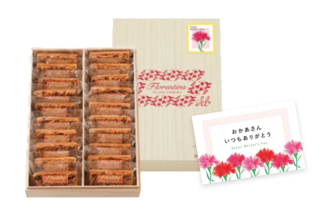
母の日専用ギフトシール
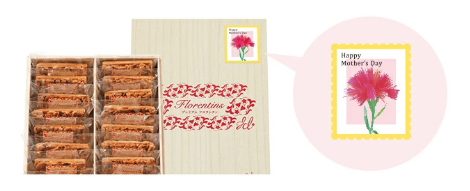
母の日専用メッセージカード
山形市にある「キッチンハウスえすかるご」は、おしゃれな雰囲気と、新鮮で美味しい山形県産食材を生かしたメニューが人気の、平日でもランチタイムは開店前から行列ができるというレストラン。今回ご紹介する「フロンランタン」は、その「えすかるご」が開いたこだわりの洋菓子店「ルレ・デセール エスカルゴ」の定番スイーツ。洋菓子店を開く前から、レストランでの食後のスイーツとして愛され続けている、「えすかるご」こだわりの味です。 贅沢に使われる、北海道産発酵バターをはじめ、厳選したリッチな素材が生みだす豊かな食感と、香ばしく濃厚な味わいをぜひお楽しみください。
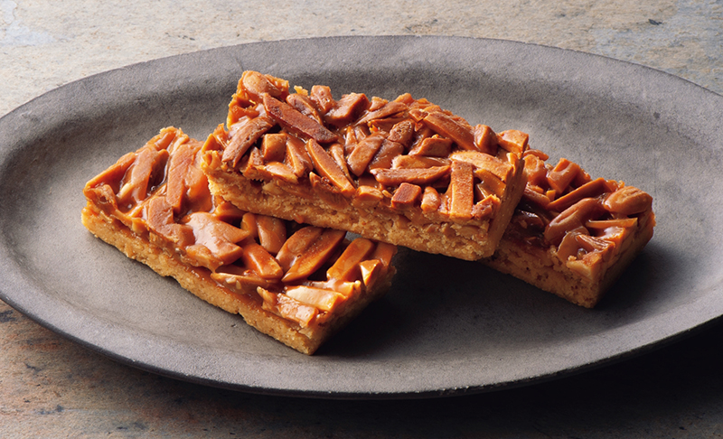
【山形の極み】パティスリーESCARGOT 焼き菓子シリーズ
最高級の材料を惜しげなく
レストラン時代から変わらぬこだわり
「フロランタン」とは「フィレンツェの」という意味のフランス語で、クッキー生地にキャラメルコーティングしたナッツをのせた焼き菓子を指します。中世の時代、芸術文化の発信地である花の都フィレンツェでつくられたため、そう呼ばれるようになったとか。
20年以上も地元で愛されるレストランが開いた、女性客を中心にたくさんのファンを持つ洋菓子店「ルレ・デセール エスカルゴ」にとって、この「フロランタン」は特別な存在です。 その一番の理由は、「そもそもレストランでの食後の人気スイーツであり、洋菓子店を開いて、まず初めに手がけたお菓子だから」。
レストラン時代からこだわり、今も大切にしているのが「フロランタン」ならではの、「ザクッ」「カリッ」とした食感です。最初はまず、極上の素材を集めることから始めました。国産の焼き菓子専用小麦粉、カリフォルニアから取り寄せるアーモンド、そして何よりこだわったのが北海道産発酵バターです。
「ルレ・デセール エスカルゴ」の「フロランタン」づくりは、選び抜いた小麦粉を使用したクッキー生地づくりから始まります。生地を伸ばし型に入れたクッキーベースを焼きながら、バニラ抽出100%のピュアオイルを使用したキャラメルソースをゆっくり煮詰めます。クッキーベースに軽く焼き色がついたら、煮詰めたキャラメルソースに、食感にこだわり、一般的なスライスアーモンドではなく、スリバードと呼ばれる短冊状にカットしたアーモンドを香り高くローストしたものをからめて流し込みます。それら素材の旨味をギュッと凝縮し、香ばしさとこだわりの食感を生み出す焼成時間の長さは、その日の湿度や素材のコンディションによってパティシェの小鹿さんが経験に基づき調整。1枚1枚が間違いなく香ばしく、「ザクッ」「カリッ」の食感となるように、仕上がりをチェックしながら丹念にオーブンで焼き上げていくのです。
そんな「ルレ・デセール エスカルゴ」の「フロランタン」が愛される理由は、その味わいはもちろんですが、小さな厨房で毎日丁寧に手づくりされているからこそ生まれる、ハンドメイドの温かみ。 日持ちのする焼菓子なので、ご自宅用としてはもちろん大切な方への手土産やプレゼントとしても喜ばれています。
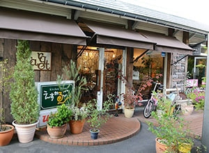
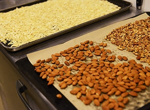
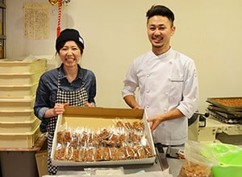
フロランタンから始まった発酵バターへのこだわり
洋菓子づくりを本格的に始める際、最上のバターとして出会ったのが北海道産の発酵バターでした。日本で親しまれているのは発酵させない甘性バターですが、ヨーロッパでは乳酸菌を加えて発酵させる発酵バターのほうが一般的です。発酵バターは、バター本来の甘みにヨーグルトのような爽やかな香りや酸味が加わるのが特徴。その独特の風味やコクに注目し、日本でもここ数年は製菓業界を中心に注目を集めています。「ルレ・デセール エスカルゴ」は、他に先駆け「発酵バター」を使い始め、生産者と親密な関係を築きあげていることから、最上級の発酵バターを優先的に仕入れることができ、その味わいを生かし、現在では「ルレ・デセール エスカルゴ」がつくる、ほぼすべてのお菓子に、その最上の発酵バターがつかわれているのです。

光を放つ艶やかさと、独特の触感へのこだわり
「ルレ・デセール エスカルゴ」の「フロランタン」は、その味わいはもちろんツヤツヤと光を放つ焼き上がりの「照り」も特徴となっています。その照りは、何かを塗って生むものではなく、焼き上げのテクニックが素材そのものから生み出すナチュラルな「艶」なのです。
また、その艶が生まれるまでしっかり焼くことで、余分な水分を飛ばし、「ザクッ」「サクッ」という、独特の食感を生み出し、同時に素材の旨みも凝縮されるので、美味しさの密度も高まるそうです。この艶と食感、そして味わいは、焼き過ぎとなる直前まで焼き上げることで初めて生まれるそうですが、そのための焼成時間は、その日の湿度や食材の状態によって異なってくるため、パティシェの小鹿氏自身がオーブンをにらみながら、その五感と経験に基づき一台一台、焼き上がりのタイミングを判断。まさにこだわりと匠の技が生む逸品です。
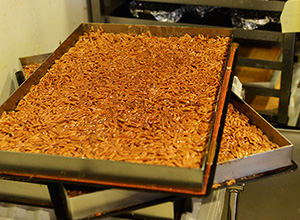
レビュー
開封から味わいまで、
美食の専門家が徹底レビュー！
ナッツの香ばしさをここまで引き出したお菓子には、これまで出会ったことはありません
フードライター 藤岡智子 さん
-
フタを開けるのもドキドキする、素敵な木箱
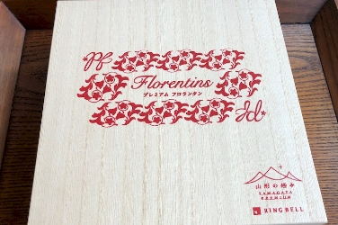
-
開けてみると、つやつやとしたナッツがふんだんにのった焼菓子
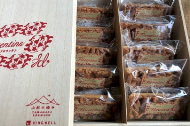
-
封を開けて取り出すと、思った以上に厚みがあります
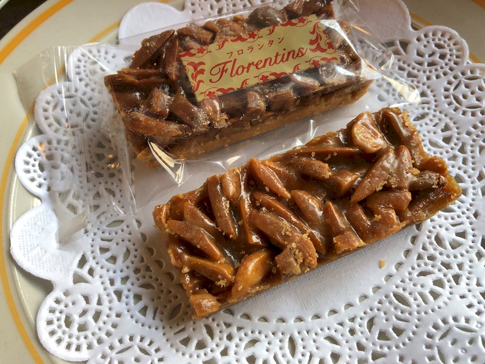
-
バターの豊かな風味は、紅茶にも、ホットミルクにも、よく合います
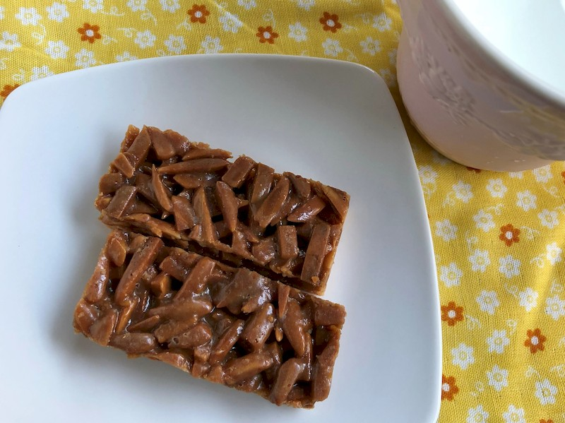
食べると口に広がるバターの香りと、香ばしいアーモンドの相性がバツグン
フードコーディネーター 久保居亜由美 さん
-
オリジナルの「山形の極み」シリーズをお試しさせていただきました
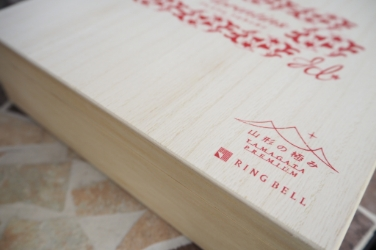
-
クッキー生地にナッツなどをのせてキャラメルでコーディングした焼き菓子
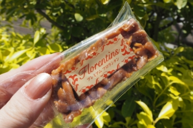
-
ザクザク・サクサク・カリカリといういろいろな食感が楽しめました
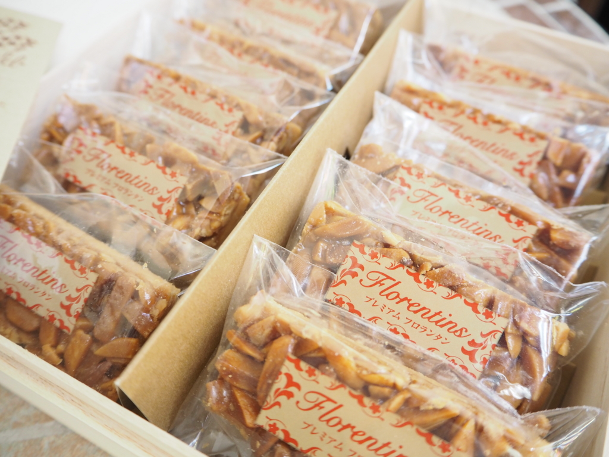
-
北海道産の発酵バターを使用しているんだそう
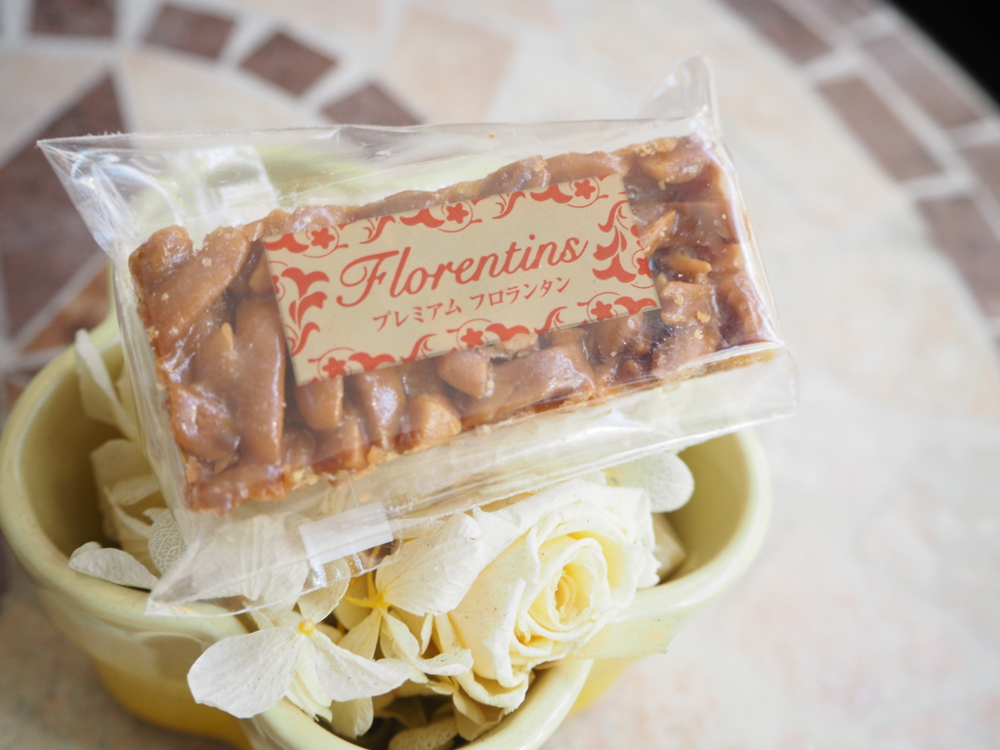